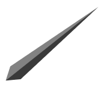

<!DOCTYPE html>
<html>
<head>
    <meta charset='utf-8'>
    <meta http-equiv='X-UA-Compatible' content='IE=edge'>
    <title>Page Title</title>
    <meta name='viewport' content='width=device-width, initial-scale=1'>
    <link rel='stylesheet' type='text/css' media='screen' href='main.css'>
    <script src='main.js'></script>
    <style>
        .analog-clock{
            width:100%;
            max-width: 400px;
            height: 400px;
            /* border: 1px solid; */
            border-radius: 100%;
            position: relative;
            box-shadow: 
    inset -13.79px -13.79px 17.24px 3.45px #FFFFFF,  /* Inner shadow */
    13.79px 13.79px 34.48px 0px #00000040;     
        }


        .animate {
  animation-name: rotate;
  animation-iteration-count:infinite;
  animation-timing-function:linear;
}


@keyframes rotate {
  from {
    transform: rotate(0deg);
  }
  to {
    transform: rotate(360deg);
  }
}


        .analog-clock-minutes {
    height: 100%;
    background-image: url(images/minutes.png);
    background-repeat: no-repeat;
    background-size: contain;
}

.analog-clock-hours {
    height: 100%;
    background-image: url(images/hours.png);
    background-repeat: no-repeat;
    background-size: contain;
}

div#secondbar img {
    transform: rotate(275deg);
}

div#minutesbar img {
    transform: rotate(12deg);
}


div#hourbar img{
    transform: rotate(99deg);
}

#minutesbar{
    width: 1.6%;
    height: 30%;
    top: 19%;
    left: 48.9%;
    opacity: 0.8;
}

div#secondbar {
    width: 1%;
    height: 40%;
    top: 9%;
    left: 49.25%;
    animation-duration: 60s;
}


.clock-bars{
    position: absolute;
    background-color: grey;
    transform-origin: bottom;
}

.dot {
    text-align: center;
    position: absolute;
    top: 50%;
    left: 50%;
    transform: translate(-50%, -50%);
    background: grey;
    height: 11px;
    width: 10px;
    border-radius: 100%;
}

div#hourbar {
    width: 1.8%;
    height: 25%;
    top: 25%;
    left: 48.85%;
    opacity: 0.8;
}


        </style>
        <script>
setInterval(() => {
    d = new Date(); //object of date()
    hr = d.getHours();
    min = d.getMinutes();
    sec = d.getSeconds();
    hr_rotation = 30 * hr + min / 2; //converting current time
    min_rotation = 6 * min;
    sec_rotation = 6 * sec;
 
    var hour = document.getElementById("hourbar");
    var minute = document.getElementById("minutesbar");
    var second = document.getElementById("secondbar");
    hour.style.transform = `rotate(${hr_rotation}deg)`;
    minute.style.transform = `rotate(${min_rotation}deg)`;
    second.style.transform = `rotate(${sec_rotation}deg)`;
}, 1000);


            </script>
</head>
<body>
    <div class="analog-clock">
        <div class="analog-clock-minutes">
            <div class="dot"></div>
            <div class="analog-clock-hours">
             <div class="clock-bars" id="hourbar">
                  <!--  -->
             </div>

        <div class="clock-bars"  id="minutesbar">
<!--  -->
</div>

<div class="clock-bars animate" id="secondbar">
<!--  -->
</div>
</div>
</div>
    </div>
</body>
</html>